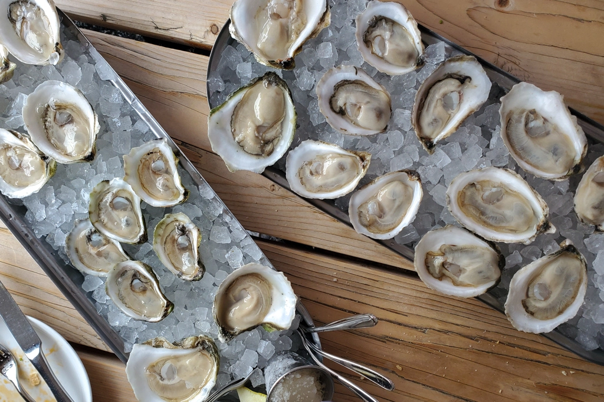

Maine Food Tour
Jun 6 - Written by Bonnie and Emily
Having had a recent craving for some fresh seafood and also a chance for us to go on a small trip with friends, we decided to take a one day food tour through Portland, Maine to check out some of their most popular foods! Of course we had to share our experience and thoughts on all the restaurants that we checked out!
We started off the morning with a cup o’ Joe to keep us awake through the morning drive from Boston to Portland. Since we had timed our trip to reach Portland right around lunchtime, we were plenty hungry when we arrived and immediately set off to our first destination.
So many of our friends and family have raved about the unforgettable fries and sauces at Duckfat so we made it one of our first stops of the day. Since they are known for their french fries, we ordered a poutine and a large order of fries to share. Although there was a long list of dipping sauces to choose from, the two that we decided to try were the Garlic Mayo and Truffle Ketchup. And to be honest, Bonnie had her doubts about how good french fries could really be and was pretty skeptical up until she took her first bite.
Now we have to say, it could’ve been partially due to hunger but boy were those some delicious french fries!! The crispy exterior with the perfect amount of softness in the center, it was just the perfect blend of crunchy and soft that makes your mouth water. On top of that was the unique and delicious dipping sauces to go with our fries. The garlic mayo was definitely pretty strong in garlic flavor and provided a creamy texture to the fries while the truffle ketchup provided just the right amount of smokey truffle flavor to balance out the hint of tartness in the ketchup base. Now, if you’ve ever had french fries in France or Europe, a common sight you’ll see is combining mayo and ketchup with your fries but to combine specialty mayo and ketchup was an even more mind blowing flavor. You may say, how can you describe french fries in such a gourmet manner? Trust us, it’s that good. Their poutine was also equally as delicious as you cannot go wrong with gravy and cheese curds and it reminded us of our past trips to Canada.
Since Duckfat is in a prime location filled with bustling restaurants, two of the other food spots that we wanted to hit were also nearby. Eventide Oyster Co., one of the popular restaurants in Portland was only a block away from Duckfat. This was perfect for us as we could satisfy our tummies with some Duckfat french fries while waiting for a table at Eventide. Since Eventide is a popular restaurant, their wait times can take up to a few hours so it's always helpful to book a reservation or put your name down before exploring the other restaurants in the area as a pre-meal snack!
With the name Eventide Oyster Co., I’m sure it gave you a big hint as to what we may have ordered here - oysters!! Since we were looking to fill up our bellies in a few other spots, we mainly ordered the raw oysters here and boy were they a delicious stop on our Maine tour. Some of our favorite oysters include the John’s River and Love Point, both of which have a more clean and sweet after taste. Now other than the delicious quality of their oysters, there's something else that was just as delicious-- their sauces! I know, we seem to be raving about a lot of sauces here but trust us this one was unforgettable.
Of course we went for some of the classic accoutrements like cocktail sauce and a mignotte, but what really got us were the specialty flavored ice that you could top your oysters with. Two of our favorites include the red onion ice, which added a hint of sweetness, and the horseradish ice, which packs a great punch to accompany your oysters.
With some delicious appetizers to keep us content for the time being, we moved on to one of the most anticipated meals for Bonnie. When in Maine of course you have to get lobster right!? The next stop on our tour was at another popular spot, Portland Lobster Co. Being famous for their fresh lobster, we had to order their lobster roll. Since their lobster was lightly tossed in mayo, we could taste the fresh flavors of lobster in every bite. Not to mention, they had a tank filled with lobsters in the restaurant itself that definitely guaranteed that they were using fresh lobsters in their rolls!
Other than their lobster rolls, our friend recommended that we give the crab meat sandwich and fried clams a try. We have to admit, the fried clams were quite good as they were some high quality clams and when mixed with their batter, it created the most satisfying bites. The crab sandwich was filled with shredded crab meat that's also been lightly tossed in sauce which gave fresh crab flavor but definitely was not as meaty and flavorful compared to their lobster roll. Out of the few items we tried, we would definitely recommend getting the lobster roll when you’re there and an order of fried clams to share with the table!
With all that food in our bellies we of course had to add dessert to the mix! We made our way to Holy Donut, a shop famous for their potato donuts topped with a variety of flavors. However, since their store closes once their last donut for the day has been sold, we would recommend that this be one of the first stops when you’re in Portland. Since it was our first time, we arrived a little late and only had a few flavors to choose from. We were able to get a Cinnamon sugar donut, Blueberry Glaze donut, and an Old fashion. The Blueberry Glaze donut was definitely one of the more unique donuts we tried because the base donut was also a blueberry batter and had a flavor that resembled a blueberry muffin. However, since the batter uses potato, it did provide a more chewy texture to all the donuts which was quite unique. One of Bonnie’s favorites from the three was the cinnamon sugar, it's such a classic you really can’t go wrong! Especially since the donut was still relatively warm when we tried them the cinnamon sugar and warm donut melded into one another to create a delicious dessert.
Next on our food tour was Rising Tide brewing company to take some time to rest and try some beers before heading out for more food. As we wanted to try a variety of beers, we each got a flight of four beers to try. Out of all the beers we tasted, our favorite was Nature’s Gold as the maple syrup provided a nice amount of sweetness to balance out the flavor of the beer. As a fan of tart flavors, Bonnie also really enjoyed the Squadron. If you’re a fan of chai tea and beer, you may like the Unstoppable which is a combination of the two. No matter what beers you choose to try, Rising Tide is a great place to catch up with some friends and take a nice break from eating.

Now that we have hit all the spots in Portland that we wanted to go to, we headed down to Kittery for some more seafood, specifically fried seafood. Whether you’re just looking for a snack or a full meal, Bob’s Clam Hut is the place to go. Known for their fried clams, that was one of the things we definitely had to order. To go with that, we chose two of our favorite seafoods, shrimp and scallops to create the best combination of fried seafood one could ask for. The clams were just as good as the fried clams we had at Duckfat and the shrimp and scallops were a nice change in texture as they were much softer and less chewy. If you’re looking for some good quality fried seafood and aren’t looking to drive too far into Maine, this is the place for you. It’ll definitely satisfy your fried seafood cravings!
This food tour of Maine was based around seafood as that is what they are known for and as two people who love seafood, we had to take advantage of that. Though we tried many places, there are still many more that we didn’t get to try and will have to go back for. From fresh raw oysters to lobster rolls and french fries, the spots we hit up gave us a taste of Maine. If you’re in New England and are looking for a nice day trip to take with friends, definitely give these places a try! And if you aren’t, that's okay too, you can plan a food tour of your own in whatever city you choose as it’ll be the best way to get a taste of everything in a short amount of time.